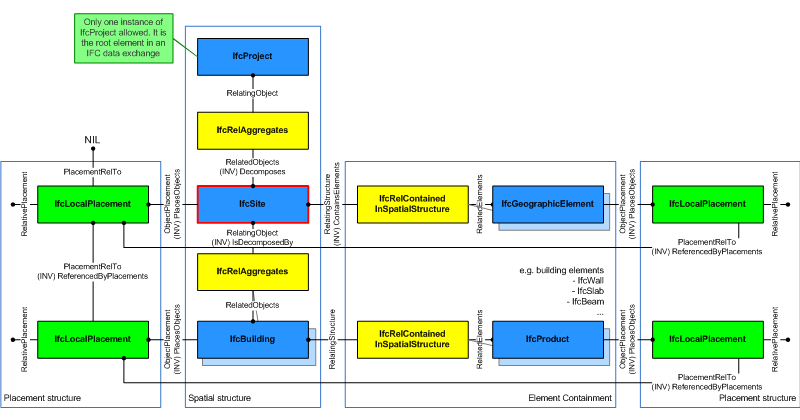
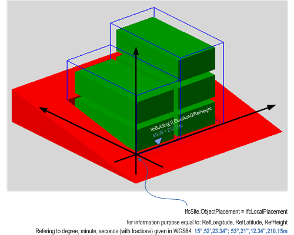
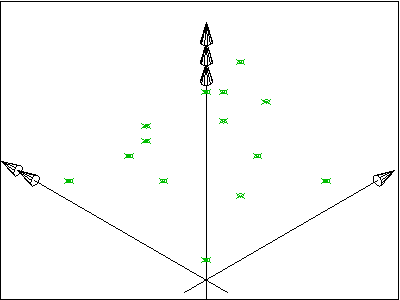
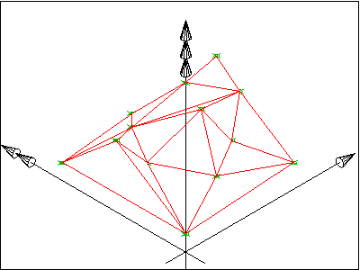
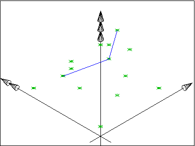

Instance diagram
Instance diagram| Site | |
| Grundstück |
A site is a defined area of land, possibly covered with water, on which the project construction is to be completed. A site may be used to erect, retrofit or turn down building(s), or for other construction related developments.
NOTE Term according to ISO6707-1 vocabulary "area of land or water where construction work or other development is undertaken".
A site may include a definition of the single geographic reference point for this site (global position using WGS84 with Longitude, Latitude and Elevation). The precision is provided up to millionth of a second and it provides an absolute placement in relation to the real world as used in exchange with geospational information systems. If asserted, the Longitude, Latitude and Elevation establish the point in WGS84 where the point 0.,0.,0. of the LocalPlacement of IfcSite is situated.
The geometrical placement of the site, defined by the IfcLocalPlacement, shall be always relative to the spatial structure element, in which this site is included, or absolute, i.e. to the world coordinate system, as established by the geometric representation context of the project. The world coordinate system, established at the IfcProject.RepresentationContexts, may include a definition of the true north within the XY plane of the world coordinate system, if provided, it can be obtained at IfcGeometricRepresentationContext.TrueNorth.
A project may span over several connected or disconnected sites. Therefore site complex provides for a collection of sites included in a project. A site can also be decomposed in parts, where each part defines a site section. This is defined by the composition type attribute of the supertype IfcSpatialStructureElements which is interpreted as follow:
The IfcSite is used to build the spatial structure of a building (that serves as the primary project breakdown and is required to be hierarchical).
Figure 142 shows the IfcSite as part of the spatial structure. In addition to the logical spatial structure, also the placement hierarchy is shown. In this example the spatial structure hierarchy and the placement hierarchy are identical.
NOTE Detailed requirements on mandatory element containment and placement structure relationships are given in view definitions and implementer agreements.
 |
Figure 142 — Site composition |
HISTORY New entity in IFC1.0.
Attribute Use Definition
Figure 143 describes the heights and elevations of the IfcSite. It is used to provide the geographic longitude, latitude, and height above sea level for the origin of the site. The origin of the site is the local placement.
The provision of longitude, latitude, height at the IfcSite for georeferencing is provided for upward compatibility reasons. It requires a single instance of IfcSite and WGS84 as coordinate reference system.
For exact georeferencing (or referencing to any other geographic coordinate system other than WSG84) the entities IfcCoordinateReferenceSystem and IfcMapConversion have to be used to define an exact mapping of the project engineering coordinate system to the geographic (or map) coordinate system.
 |
|
Figure 143 — Site elevations |
The following concepts are inherited at supertypes:
Spatial Decomposition
The Spatial Decomposition concept applies to this entity.
By using the inverse relationship IfcSite.Decomposes it references IfcProject || IfcSite through IfcRelAggregates.RelatingObject, If it refers to another instance of IfcSite, the referenced IfcSite needs to have a different and higher CompositionType, i.e. COMPLEX (if the other IfcSite has ELEMENT), or ELEMENT (if the other IfcSite has PARTIAL).
Spatial Composition
The Spatial Composition concept applies to this entity.
By using the inverse relationship IfcSite.IsDecomposedBy it references (em>IfcSite || IfcBuilding || IfcSpace by IfcRelAggregates.RelatedObjects. If it refers to another instance of IfcSite, the referenced IfcSite needs to have a different and lower CompositionType, i.e. ELEMENT (if the other IfcSite has COMPLEX), or PARTIAL (if the other IfcSite has ELEMENT).
Spatial Container
The Spatial Container concept applies to this entity.
If there are building elements and/or other elements directly related to the IfcSite (like a fence, or a shear wall), they are associated with the IfcSite by using the objectified relationship IfcRelContainedInSpatialStructure. The IfcIfcSite references them by its inverse relationship:
Property Sets for Objects
The Property Sets for Objects concept applies to this entity as shown in Table 64.
Table 64 — IfcSite Property Sets for Objects |
Quantity Sets
The Quantity Sets concept applies to this entity as shown in Table 65.
| ||
Table 65 — IfcSite Quantity Sets |
Product Placement
The Product Placement concept applies to this entity.
The local placement for IfcSite is defined in its supertype IfcProduct. It is defined by the IfcLocalPlacement, which defines the local coordinate system that is referenced by all geometric representations.
FootPrint GeomSet Geometry
The FootPrint GeomSet Geometry concept applies to this entity as shown in Table 66.
| ||||||||
Table 66 — IfcSite FootPrint GeomSet Geometry |
The foot print representation of IfcSite is given by either a single 2D curve (such as IfcPolyline or IfcCompositeCurve), or by a list of 2D curves (in case of inner boundaries).
Survey Points Geometry
The Survey Points Geometry concept applies to this entity as shown in Table 67.
| ||||||
Table 67 — IfcSite Survey Points Geometry |
The survey point representation of IfcSite is defined using a set of survey points and optionally breaklines. The breaklines are restricted to only connect points given in the set of survey points. Breaklines, if given, are used to constrain the triangulation.
The representation identifier and type of this geometric representation of IfcSite is:
Figure 144 shows a set of survey points, given as 3D Cartesian points within the object coordinate system of the site. Figure 145 shows the result after facetation.
The set of IfcCartesianPoint is included in the set of IfcGeometricCurveSet.Elements.
 |
 |
Figure 144 — Site survey points |
Figure 145 — Site survey points facetation |
Figure 146 shows A set of survey points, given as 3D Cartesian points, and a set of break points, given as a set of lines, connecting some survey points, within the object coordinate system of the site. Figure 147 shows the result after facetation.
The set of IfcCartesianPoint and the set of IfcPolyline are included in the set of IfcGeometricCurveSet.Elements.
 |
|
Figure 146 — Site breaklines |
Figure 147 — Site breaklines facetation |
NOTE The geometric representation of the site has been based on the ARM level description of the site_shape_representation given within the ISO 10303-225 "Building Elements using explicit shape representation".
Body Geometry
The Body Geometry concept applies to this entity as shown in Table 68.
| ||||||
Table 68 — IfcSite Body Geometry |
The body representation of IfcSite is defined using a solid or surface model. Applicable solids are the IfcFacetedBrep or on the IfcFacetedBrepWithVoids, applicable surface models are the IfcFaceBasedSurfaceModel and the IfcShellBasedSurfaceModel.
The representation identifier and type of this representation of IfcSite is:
XSD Specification:
<xs:element name="IfcSite" type="ifc:IfcSite" substitutionGroup="ifc:IfcSpatialStructureElement" nillable="true"/>EXPRESS Specification:
| ENTITY IfcSite |
| SUBTYPE OF IfcSpatialStructureElement; |
|
| END_ENTITY; |
Attribute Definitions:
| RefLatitude | : |
World Latitude at reference point (most likely defined in legal description). Defined as integer values for degrees, minutes, seconds, and, optionally, millionths of seconds with respect to the world geodetic system WGS84.
NOTE Latitudes are measured relative to the geodetic equator, north of the equator by positive values - from 0 till +90, south of the equator by negative values - from 0 till -90. |
| RefLongitude | : |
World Longitude at reference point (most likely defined in legal description). Defined as integer values for degrees, minutes, seconds, and, optionally, millionths of seconds with respect to the world geodetic system WGS84.
NOTE Longitudes are measured relative to the geodetic zero meridian, nominally the same as the Greenwich prime meridian: longitudes west of the zero meridian have negative values - from 0 till -180, longitudes east of the zero meridian have positive values - from 0 till -180. EXAMPLE Chicago Harbor Light has according to WGS84 a longitude -87.35.40 (or 87.35.40W) and a latitude 41.53.30 (or 41.53.30N). |
| RefElevation | : | Datum elevation relative to sea level. |
| LandTitleNumber | : | The land title number (designation of the site within a regional system). |
| SiteAddress | : | Address given to the site for postal purposes. |
Inheritance Graph:
| ENTITY IfcSite |
| ENTITY IfcRoot |
|
| ENTITY IfcObjectDefinition |
| INVERSE |
|
| ENTITY IfcObject |
|
| INVERSE |
|
| ENTITY IfcProduct |
|
| INVERSE |
|
| ENTITY IfcSpatialElement |
|
| INVERSE |
|
| ENTITY IfcSpatialStructureElement |
|
| ENTITY IfcSite |
|
| END_ENTITY; |
 Link to this page
Link to this page